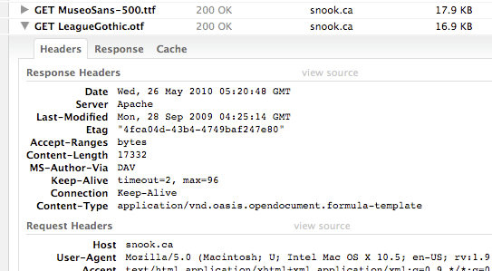

After removing as many HTTP requests as possible from your waterfall, it's time to take a look at what's left. The next step is to make sure that the components you do send over the network are as small as they can be. This not only makes your pages load faster, but also lowers your bandwidth bill (as well as the user's). The ways to put your components on a file-size diet include:
In this chapter we'll look at reducing sizes of common file types used on the web, with the exception of images. Images are discussed in detail in the next chapter.
The easiest and at the same time quite effective performance optimization is to enable compression for all plain text components. It's almost a crime if you don't do it. It doesn't cost any development time, because you're not changing even a single line of code. It's just a simple flip of a switch in your server configuration with surprisingly good results. Let's take a look at how this magic works.
Virtually all browsers in use today support compression. Instead of sending the HTML code for a page as-is, you can tell the server to compress it first and send it in the much smaller compressed form over the network. The browser receives the compressed file, decompresses it and renders it on the screen. It may look like extra work, but it's well worth it. The time it takes to compress on the server and decompress on the client is negligible compared to the time saved by having fewer bytes travel across the wire.
On average, compression will save you a staggering 70% of the file size across all text-based components.
Later in the book as well as in other books and blogs you'll encounter the terms gzip or gzipping as synonyms for compression. That's because gzip (pronounced gee-zyp) is the most popular compression algorithm used in HTTP file transfers.
It's best to compress any text-based file, meaning any component that you can open in a text editor and read its contents. That includes:
Files that shouldn't be compressed by the server are those that are already in compressed formats such as JPEG and PNG images, SWF files, PDF documents, Zip file downloads and so on.
In order to enable compression you don't have to do anything to the files
manually. You let your server do it for you. The most popular web server is
Apache and that's probably what you're using. Even if you don't have full
control over your server configuration, most hosting providers will offer you
the ability to tweak configuration via .htaccess files.
In the previous chapter we talked about adding Expires headers
to an .htaccess file. Now let's add some more instructions. You
need to list the component types of the files you want Apache to compress for
you:
AddOutputFilterByType DEFLATE text/html text/plain text/xml AddOutputFilterByType DEFLATE text/css AddOutputFilterByType DEFLATE application/javascript AddOutputFilterByType DEFLATE application/x-javascript AddOutputFilterByType DEFLATE text/javascript AddOutputFilterByType DEFLATE application/json
Another way to specify which files the server should compress is to list file extensions, like so:
<FilesMatch "\.(js|css|ttf|eot|otf|svg)$"> SetOutputFilter DEFLATE </FilesMatch>
And you can mix and match the two ways.
If you're not sure about the content type of an element, you can simply peek
into the HTTP response headers. For example OTF font files are often served with
text/plain content type. But on Figure 4.1. you can see a
screenshot of Firebug's Net panel showing how an .otf file on the popular blog
snook.ca is served with a not so straightforward content type. If this is your
server, you can enable compression for .otf files using:
AddOutputFilterByType DEFLATE application/vnd.oasis.opendocument.formula-template

If your site is running on Apache before version 2 or your unfriendly host doesn't allow any access to configuration, not all is lost. You can make PHP (or another server-side language) do the gzipping for you. It's not ideal, because (architecturally speaking) you'll have your application layer handle the task of the server layer, but the gzip benefits are so pronounced that it's worth the try.
After you setup your server configuration, how can you tell if it worked? The easiest way is to simply take note of the file sizes of the HTML, CSS or JavaScript. If these components are suddenly much lighter, than it worked. To make sure, you can open Firebug's Net panel or load the page in WebPageTest and check the HTTP headers.
Accept-Encoding: gzip, deflate
With this header the browser informs the server that it (the browser) can handle encoded files that use either deflate or gzip encoding.
Then the server sends the CSS together with the response header:
Content-Encoding: gzip
That's as if the server is saying, "Here's your file and by the way, it's compressed with gzip".
If the Content-Encoding is in the response headers coming from
your server, that means you set it up properly. If you think you did everything
right and it still doesn't work, the first thing to do is check if the browser
is indeed sending the Accept-Encoding header. Sometimes, albeit
rarely, your browser may be at fault.
Another response header to look for is the Vary header. It
should look like so:
Vary: Accept-Encoding
Its role is to instruct proxy servers that sit between the server and the
browser (such as the client's ISP) to cache and serve the version of the page
depending on the Accept-Encoding header. Otherwise a browser that
doesn't support gzip may receive the cached response from the request made by
another client of the ISP, which supports gzip. Apache will add the
Vary header for you automatically, but if it doesn't, you can do it
yourself using the following line in your .htaccess:
Header append Vary Accept-Encoding
Keep in mind that very small files will not be compressed. "Small" according to Apache's default settings means fewer than 500 bytes. The reason is that the overhead of the compression is not worth the benefit. Really tiny files may even end up larger after compression. So when debugging your setup make sure you're looking at a file that is big enough.
As you can imagine there are certain costs associated with the server compressing the response and the browser uncompressing it. But the costs are negligible compared to the benefits you get. Sometimes under heavy traffic you may see your server stop gzipping for a while although it's properly configured to do so. Apache will stop compressing automatically in order to save processor time under heavy load.
There are also some browser quirks. IE6 service pack 1 has problems with
decompression although it claims that it can handle it. This was fixed quickly
with service pack 2 and you can ignore this edge case. But if you're extra
paranoid you can disable gzip for this user agent; Apache allows configuration
based on sniffing the User-Agent request header.
There's also a potential for file size reduction for common downloadable files, which are actually zip files with different file extensions. Some examples include:
These ZIP files in disguise are usually not compressed with the maximum compression in order to make the file saving operations faster. For example if you're writing a document in Word, the constant auto-save will not use a good compression level in order to make the auto-saves faster and not interfere with your work. But if you allow such downloads from your website, you can consider recompressing them with maximum compression.
For example if you take a Word .docx file and unzip it using a command line tool (or add a .zip extension to it and unzip with a GUI tool) you'll see that it contains a few directories with some XML and other files. Then you can zip again all the files you unzipped but this time using the maximum compression.
If you're using the command-line utilities zip and unzip you can do the following:
tmp/ directory:
unzip source.docx -d tmp/
/tmp and zip all the files in it
cd tmp/ zip -9 -r ../result.docx tmp/
The results could be anywhere between a 1 and 30% size reduction. It's definitely worth the try, especially since it's just a one-time operation you perform before the document goes live on your site. You could also automate the process, since it can be done by a command-line script.
You can also consider a utility that provides even better compression than the popular zip and unzip, such as 7-zip.
In addition to compression you can also minify certain component types such as scripts and stylesheets.
Minification means striping extra code from your programs that is not essential for the program's execution. The code you can safely strip is mainly comments and whitespace. Another part of minification is using the shortest possible syntax when there are several options. And, when safe to do so, minifiers can rename variables by using shorter names.
Minification is best done by a tool, because it's nearly impossible to do it properly by hand. Luckily there are quite a few tools available and most are free and open source.
Some of the tools to minify JavaScript include:
All of these tools have web-based UI versions available so you can use the tools without installing them.
How much size reduction can you expect from minification? Running the popular jQuery library through all the tools mentioned above shows that savings are between 40% and 60% depending on the tool.
You should still gzip the minified JavaScript files before sending them to the server. Gzipping alone gives you about 70% savings and minification alone cuts script sizes with more than half. Both combined (minifying then gzipping) can make your scripts 85% leaner.
So the recommendation is: do it. The concrete tool you use doesn't matter all that much, pick anything you're comfortable with and it will still give you the significant approximate 85% savings of gzipping and minification combined.
The best part is that running the JavaScript code is not affected at all by minification, so you don't need to retest everything.
Another performance optimization you should do is to minify CSS, just like JavaScript. In addition to the usual stripping of comments and whitespaces, there are some slightly more advanced CSS minifications that could be done by your tool of choice.
The minifier can use shorter syntax when applicable, for example stripping units of measure (e.g. px) when the value is 0 or using shorthands.
/* before */ .test { padding: 0px 0px 0px 0px; } /* after */ .test{padding:0}
Another task for the minifier is to use the shortest color syntax.
/* before */ .module { background: #ff00ff; } /* after */ .module{background:#f0f}
The CSS minifiers are more restricted in what they can do compared to
JavaScript minifiers. A CSS minifier cannot rename properties for example, so
there's no way to make text-decoration: underline any shorter.
Some CSS minification tools include:
In order to get an average figure of the potential benefits of CSS minification, I ran these tools on all stylesheets from csszengarden.com. The average savings were a little under 40%, so CSS minification is not as good as JavaScript minification. Gzip savings are still around 70% and the combined savings of gzipping the minified CSS result in 80% savings on average.
An important note here is that in CSS we deal with a lot of hacks. Since the browsers have parsing issues (which is what hacks often exploit), that makes the minifier's task even more complicated. Not only does it have to properly handle the CSS syntax (better than some browsers) but it must also understand and preserve the hacks that resolve browser bugs. Both YUICompressor and CSSTidy tolerate a lot of hacks, but probably not all, especially some of the more exotic ones, so approach CSS minification with care. Before trusting the minifier test it to make sure it supports the hacks you're likely to use.
Minifying HTML is not as simple as minifying CSS and JavaScript. Whitespace sometimes affects display in certain browsers. Comments may have a special meaning (e.g. conditional comments). Still there are sites that minify the HTML, for example Google search and Yahoo! Search.
Due to the challenges of minifying HTML, it's usually not safe to let a tool do it for you automatically. Additionally, most of the pages on the web are not static but are dynamically generated by a server-side scripts. One simple way to do HTML minification is to just make sure you're not creating white space when producing HTML in your server scripts. That, of course, makes HTML harder to read, but with modern DOM inspectors such as Firebug, "View Source" is rarely used, so unreadable HTML will not often be an issue.
Not creating whitespace and comments is the easiest HTML minification and often has the biggest benefit. But if you are really determined to produce the lightest HTML possible, there are more options.
Let's see some options for producing minimal HTML code.
The HTML5 doctype is much shorter than previous HTML and XHMTL versions. It's simply:
<!doctype html>
There are a number of HTML tags, which the standard allows to be left unclosed. Care needs to be taken, but you can often omit many closing tags such as:
</html>, </body>, </head>
</li>, </dd>, </dt>, </option>
</p>
</tr>, </th>, </td>, </tbody>, </thead>
There's no reason to repeat the domain in all internal links. This tag:
<a href="http://example.org/page.html">
...is shorter when written as:
<a href="/page.html">
Quotes around attributes are optional when there's no white space in the attribute values. Therefore this tag:
<p class="intro body" id="myp">
... can be written as:
<p class="intro body" id=myp>
Additionally, when you do have a quote, the space after it is optional:
<p class="intro body"id=myp>
Boolean values that are required in XHTML can be skipped in HTML, e.g.
<input disabled="disabled">
... could be:
<input disabled>
Also
<option selected="selected">
... could be:
<option selected>
Some attributes have default values and don't need to be specified again. Examples:
<form method="get"> <input type="text"> <script language="javascript">
These can simply become:
<form> <input> <script>
As you can see, most of these HTML minification techniques would require you to edit static pages, server-side code or code in templates and are not easy to do safely. Combined with the relatively small benefits, these techniques should be used carefully, if at all.
Minifying RSS feeds and other XML documents is much safer than minifying HTML, as it's OK to strip all unneeded white space in XML. Since these documents are usually generated by a script and not written by hand, you don't need to use a minifier tool. You can simply make sure that there are no white spaces produced by your XML-generating scripts.
If minification only adds a minor benefit compared to the benefits of serving compressed content, you may wonder if it's worthwhile. While even small savings do add up, a stronger reason is that as many as 15% of all users will never receive compressed content.
There are various reasons for the lack of gzip support:
Accept-Encoding header at all Accept-Encoding to make it
invalid, e.g.
Accept-Encoding: xxxx, deflxxx Accept-EnXoding: gzip, deflate
Without a valid indication that the browser supports compression, the server sends the response in plain test. That's why a significant number of users never get a compressed response, although their browsers are often perfectly capable of supporting it.
In conclusion: minification helps. Not only because compressing minified responses makes even smaller files, but also because in 15% of all page views there is no compression support, despite your best efforts.
When talking about reducing the size of components, the smallest component
you can ever have is the one that has no body, only headers. This is known as a
204 No Content response and is mainly useful for logging, tracking,
or any other type of request where you need to send something to the server, but
don't really need a response.
Often people use 1x1 GIFs for logging and tracking, but that means still sending around a hundred bytes for no reason.
The way to send a 204 response from PHP is simply:
header("HTTP/1.0 204 No Content"); // the rest of the logging logic...
For an example in the wild, see Figure 4.3, which shows how Google
search uses 204 responses for logging purposes. Note also the
Content-Length header, which contains the size of the component's
body in bytes. In the case of 204 responses it has the value of 0.

204 No Content
responses.In this chapter you learned about:
204 No Content - the
world's smallest component with a body of 0 bytes can be used for logging and
other purposes for which developers usually use a 1x1 GIF
While recompression and 204 No Content may not be applicable to
all sites, there's no excuse for not using compression and minification. Turning
on compression is just a flip of a switch in Apache configuration. Minification
is a one-off operation done by specialized tools, right before your site goes
live. Both compression and minification will reduce components size as much as
85% (JavaScript) or 80% (CSS).